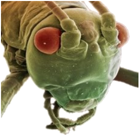

Tema 4. La Cabeza

• Segmentación de la cabeza
• Cápsula cefálica
• Líneas y áreas
• Labro y clípeo
• Hipofaringe
• Tentorio
• Teorías sobre segmentación
Capítulo 8. La cabeza (texto)
Presentación. La cabeza
Modelo 3D. Cabeza
Modelo 3D. Tentorio

Lecturas complementarias:
• Anton, et al. 2016. The Head Morphology of Clambidae.
• Friedemann, et al. 2012. On the head morphology of Phyllium.
• Knauthe, et al. 2016. Head anatomy of a miniaturized Strepsiptera.